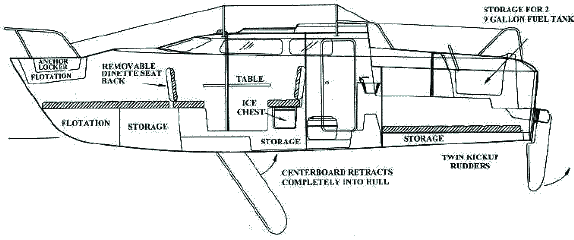
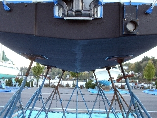
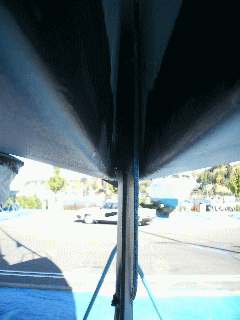

|
|
|
This myth apparently comes from fatal capsize
incidents in the 1880s involving American center boarders.
"Cutter cranks" claimed that such incidents were not
possible with the deep draft British boats and that view
prevails more or less even today. Even as late as 1996 experts could be
hired that would state in court that all centerboard boats are dangerous,
the danger stemming from the slot the board retracts into and the notion
that water can enter the hull through that slot. Those
experts were discredited by 1996 and by 1999, when Murrelet was launched,
the exact
opposite notion - that attached foils that could not be
retracted, or give way, were dangerous - gained favor. This controversy is
fascinating and is discussed through out the Cruising Log
of the Murrelet.
Murrelet is a center boarder though this is
not readily
apparent. Centerboards must cut down the middle of the
vessel. Mac26x cruisers avoid cutting accommodations down
the middle through a power boat like raised navigation
table (see below). The rudders serve as lee boards meaning that they,
like the centerboard, also hold the vessel from being
pushed with the wind. For the most part Murrelet "goes
where she looks" but I notice some drift, like a plane in a
cross wind in some conditions. The centerboard's purpose is usually
portrayed as to reduce that drift, called leeway or crabbing.
To search this site only enter a word or phrase below: |

In a Mac26x that is close hauled, excessive leeway is usually the result of an overpowered main, rather than board extention or lack thereof. Experienced deep keel racing sailors have a hard time with this and insist on pulling the Mac26x boom in as close to the centerline as possible to race into the wind, as would be done on a heavy keel boat rigged for racing. But what this does on a light cruising boat is put power in the main sail and that power is one that is lateral. Easing the main puts the power back in the Genoa where the power is more to the windward. The sails of a cruising sailboat are cut differently than those of a racing sailboat. So it is important to note that when racing a boat like the Mac26x which is designed as a cruiser first and racer second. Sailmakers cut main sails on cruising vessels for the work most common for a cruising vessel in the modern age. Cruising sailboats often motor or motor sail to windward. Hence the main sail is usually cut full to provide more power on other points of sail where motor power is not as likely. The Mac26x can also have excessive leeway close hauled if not on her optimum heel or if one of the rudders is left in its up position. Contrary to what is expected a fully extended centerboard may not be of value in reducing leeway when close hauled. Its purpose on a Mac26x goes beyond notions of purpose usually attributed to centerboards.
Centerboards were invented in China. When Europeans first began settling the Americas, they were obliged to utilize the ports long established there by the native American people. These all weather ports for the most part were to shallow for the deep draft vessels used by the British. Advancement in China's centerboard was an absolute necessity for Europeans who wished to trade in the Americas and in many ways centerboard designs represent the best of American boat building innovation.
The first great ocean race featured two large American centerboarders both bettering the deep keel British competition. It is interesting to note that this was done in strong wind conditions. The centerboarders reduced sail to maintain optimum heel where the external weighted keel British vessel's captain believed that not advantageous.
Undoubtedly the notion that shallow ports could replace the established deep water ones in Europe owing to faster sailing boats advanced by the Americans must have been troubling to commerce barons of the time. Owing to lumber, the majority of the vessels being built for commerce were being built in the Americas and if the centerboard caught on, the need for the established deep water ports in Europe would come into question by upstart developers promoting shallow water ports. An orchestrated campaign of disinformation (what we would call FUD - fear, uncertainty, doubt) was then started I believe to convince the professional captains not to favor centerboard designs. This was highly successful. For example, the Spray was a center boarder.
Captain Slocum, probably the most famous American sailor (Canadian/US), replaced Spray's centerboard with a solid plank keel prior to circumnavigating. He then had problems holding course and had to devise mechanisms to change sail plan (like bowsprits) so the vessel would self steer which is an important feature for single handling. Centerboard position will control weather helm and lee helm. Hence a centerboard is not just a mechanism to reduce leeway but also a valuable steering control. This control would have made Slocum's circumnavigation easier. His erroneous example continues to be followed and most US sailing schools will foster the myth that a fixed keel or a fin keel with ballast as low as possible contributes to stability and eliminates leeway (sometimes called crabbing) and is more seaworthy than a centerboarded vessel.

In March of 2003 even the marketers of MacGregor yachts played into this myth stating in a comparison of the X to the 2003 M model powersailer that "The (X-boat) long centerboard trunk also required a huge opening in the hull, in the most important structural area of the boat (as well as creating a very large drag problem. See Performance)". Hence this web page took on special significance.
 First, the
centerboard trunk is
part of the X hull, there is no
opening through the hull for the board as in the M. The photo to the
right shows that the X centerboard trunk is molded as part of the hull.
The only holes through the hull are for a lifting line (see lower area
of the photo - the blue line is the lifting line) and the bolt through
hull for the foil hanger (see upper portion of the trunk.) Hover the
mouse over different portions of the photo to identify through hulls.
First, the
centerboard trunk is
part of the X hull, there is no
opening through the hull for the board as in the M. The photo to the
right shows that the X centerboard trunk is molded as part of the hull.
The only holes through the hull are for a lifting line (see lower area
of the photo - the blue line is the lifting line) and the bolt through
hull for the foil hanger (see upper portion of the trunk.) Hover the
mouse over different portions of the photo to identify through hulls.
Second, there are no weak points
on the X or M hulls. Both vessels
are produced in a manner where points of stress are reinforced with up
to 17 layers of fiberglass. This reinforcement is not being done on
hulls of lengths under 30 feet by other US based manufacturers (such as
Hunter and the J-Boat
manufacturers) and is likely the main reason those manufacturers do not
market their under 30 foot sail boats as ocean going. Third, the X & M
water
ballast systems, because they are layered into the hull, provide
structural integrity far surpassing that of other ocean
sailboats. Third, the X centerboard, like that
of the third generation powersailer M daggerboard, will give way
(break off) during a hard grounding but the
X centerboard may
simply retract itself where that is
not likely with a daggerboard. Hence the M centerboard trunk is
reinforced. (Note a daggerboard is a type of
centerboard.
MacGregor Yachts invented the swing keel - another kind of centerboard
- and moved away from daggerboards
owing to a number of owners who ran the boat up trailers with destructive
results.)
 Company founders made their fortunes
on centerboard vessels in dancing around this myth. If you ask an
American sailor if a daggerboard and a swing keel are types of
centerboards you will usually be informed that they are not. Ask an
Australian and you will get the correct answer. Daggerboards and swing
keels are terms manufacturers use to avoid the centerboard controversy.
The current misperception is that weighted centerboards or at least
weight near the centerboard contributes to stability and seaworthiness.
Likely owing to dealer/distributor influence,
MacGregor Yachts company added 300 lbs of solid ballast to the M in
the form of resin in the water ballast tank and additional solid weight
around the
centerboard trunk. This is not unlike what fixed keel boat owners do when
they
find their vessel is a tippy cruiser. When the Max26x was
introduced her design took advantage of a relatively unproven rigging
invention that reduces or eliminates the need for weight on an
external foil or inside the
hull. Today vary few Mac26x cruisers and very few new model cruising
sailboats do not take advantage of this
innovation. The X brochure states:
Company founders made their fortunes
on centerboard vessels in dancing around this myth. If you ask an
American sailor if a daggerboard and a swing keel are types of
centerboards you will usually be informed that they are not. Ask an
Australian and you will get the correct answer. Daggerboards and swing
keels are terms manufacturers use to avoid the centerboard controversy.
The current misperception is that weighted centerboards or at least
weight near the centerboard contributes to stability and seaworthiness.
Likely owing to dealer/distributor influence,
MacGregor Yachts company added 300 lbs of solid ballast to the M in
the form of resin in the water ballast tank and additional solid weight
around the
centerboard trunk. This is not unlike what fixed keel boat owners do when
they
find their vessel is a tippy cruiser. When the Max26x was
introduced her design took advantage of a relatively unproven rigging
invention that reduces or eliminates the need for weight on an
external foil or inside the
hull. Today vary few Mac26x cruisers and very few new model cruising
sailboats do not take advantage of this
innovation. The X brochure states:
The roller furling system offers the single most effective way of exactly matching the amount of sail area to the amount of wind. The boat will sail very well with the jib or genoa completely rolled up, partially unrolled, or completely unrolled to full size. The sail keeps its shape no matter how much is rolled in. It is particularly useful when sailing into the wind. If the wind becomes too strong, and the boat is leaning too much, simply roll up some headsail and ease the pressure on the rig. In many situations, the boat will actually sail faster with less sail. All this can be done from the cockpit, and it is not necessary for anyone to go to the foredeck to reduce sail area.
Cranky is another word for tippy and there are two situations (underway and at rest) to consider. When underway by sail the position of the ballast need not be low in the vessel. Live ballast (crew) is often put on the topside deck windward rail for example. When sailing, the water ballast system of the X provides the same stability as a keel boat with the caviat that rigging and sails also contribute to stability. A vessel flying a single sail or in a reefed state is naturally less tippy than otherwize.
At rest or under motor power, with no sails and rigging to provide stability, weight low in the vessel is important to stabilize boats. The deep draft British cutters, for example, were tippy when unloaded and at rest. Hence the term cutter cranks as discussed above in regards to the centerboard controversy. But the notion that this weight should be on the centerline is incorrect.
The 1998 Hobart race showed that weight and foils at the centerline weaken the structural area there. A weighted unyeilding foil on centerline weakens the hull not only by touching down on the sea bottom but just by wave action over a period of time.
In 1996 a long court case was resolved involving the centerboard keel structure of a Bayliner Buccaneer 180. Water entered the bilges unnoticed and an expert testified that the water could have entered through the centerboard slot. The water contributed to a capsize and the death of panicked children. The vessel did not sink. Bayliner was believed responsible for not adequately explaining that water could enter the boat by way of the centerboard slot.
MacGregor Yachts, after the Bayliner case was resolved (in Bayliner's favor), instructed X owners how to make bilge water - which enters a vessel in so many ways including simple condensation - visible before it might contribute to a capsize. The modification ensures that excess water spills onto the cabin floor. All X boats post 1998 have the modification. X cruisers do not benefit from automated bilge pumps because there is not enough bilge to store sufficient water to activate them. A comparison of the X to the M is usefull.
The M probably should be fitted out with an automatic bilge pump. Like the cutter-crank-FUDed centerboarders the M slot cuts through the hull. This is in contrast to the X hull where only the board hanger bolt and a hole for the lifting line are through hull holes. Yet the need for a bilge pump on the M is not owing just to the fact that her centerboard cuts through the hull but also to the deeper V hull shape which can store possibly enough bilge water to contribute to capsize before that water is noticed by the operator. She, like the 1998 Hobart boats which floundered, has solid weight at the centerline. Such weight was believed to contribute to hull cracks in the 1998 Hobart race. More waterballast is also on centerline than on the X cruiser.
The X is MacGregor's first off-centerline-water-ballasted vessel and second of three powersailers but, given the above, the X has the more advanced hull, water ballast, centerboard and keel configuration. The photo below partially illustrates those features and raises questions involving the keel.

The hull's fore-aft backbone extending longitudinally along the center of the bottom and connecting the stem and the stern is often defined as the keel. However, if the definition is modified slightly to remove the word center some rather interesting conclusions can be reached.
"The hull's fore-aft backbone extending longitudinally along ANY portion of the bottom and connecting the stem and the stern is defined as the keel." By this modified definition, components of the water ballast tank and hull sides on the X boats represent keels because these are the vessel's true backbones. When on heel the part of the tank in the water is the bottom of the vessel and it is that part of the vessel where directional control attributed to a keel must be located. The X hull form provides what is in effect a full keel at two positions, each off the centerline. The M, owing to its rounding at the sides, unless skeggs are added, does not. This explains the M's main sail only mode of sailing in moderate winds. The X tracks better owing to the hard chine aft and cods head forward and hence supports large headsails upwind where these sails tend to force the M away from windward. This is an important concept for performance under sail.
Under power, unofficial web sites claimed "The old (Mac26x) centerboard trunk carried about 100 lbs of water, the new trunk carries virtually none. The 26X boat, with its flatter bottom, was slowed each time it came down hard off of a wave." This was the basis for some dealers claims that the M would out motor power the X. Such statements should be totally ignored. Remember that the X centerboard slot would be covered by the board because it is retracted when motoring at speed and that for the most part, at least in the context of crashing over a wave, it is air and water tight. In theory, as Mike, an M dealer pointed out, the X should better by nature of the flatter hull.

However, the X has a cod fish like bow (the manufacturer calls this a powerboat belly) when viewed from under the water (see above). This is a feature of the advanced Dribbly hulls (ie Tasars) as well and that could mean weight distribution or hull form itself rather than centerboard slot turbulence might make the M faster under motor. Deep V hulls are the most popular form of hull for a power boat. In the end the manufacturer listed the M as slower under motor power (22 MPH) than the X (24 MPH) when fitted with identical 50 HP engines.
For a couple of years I tried to convince a fellow Mac26x owner that his raking of the mast forward to adjust weather helm was unnecessary and even harmful to pointing. Raking is a standard technique used on keel boats to correct for unbalanced hull and rigging designs. The technique is documented by many professional riggers. Raking of the mast forward comes at a penalty involving pointing into the wind and this owner soon was reporting that as a problem. Later he convinced himself that a multihulled vessel (the Corsair) was more to his liking.
 There is very
little difference between a dagger and a swing centerboard on a boat
that is
balanced perfectly. But of course there is the loss of the control over
lee helm on centerboards that can not be moved forward or aft as is the
case with the M daggerboard when crew has balanced the vessel less then
perfectly. Lee
helm is a problem because it allows the vessel to fall off, heeling
excessively in more than moderate wind, with capsize then becoming a
potential. Ocean racers with dagger centerboards often also sport water
ballast systems that pump ballast forward and aft as well as side to side
so that perfect balance can be obtained. This type of control I view as a
replacement for a swing keel. The most popular production sailboat of
all time (though for reasons unknown no MacGregor yacht appears in
Royce Illustrated)
is the Mac25. 7,000 were produced almost in Royce's back yard, all
sporting swing keels over 14 years. But MacGregor Yachts advanced beyond
that by
removing weight from the foil and prototyping with dagger and swing
style centerboards. These experiences were on boats where the water
ballast was on centerline and it appears that dagger fitted configurations
are believed faster because the smaller slot created less turbulence on
down wing
runs where the board would be removed. This had also been observed on
Snipes and is documented in Royce Sailing Illustrated. Dingies with dagger
style centerboards (such as Snipes) were eventually fitted with
carpet and foam wedges so that the board slot would be free from
turbulence.
There is very
little difference between a dagger and a swing centerboard on a boat
that is
balanced perfectly. But of course there is the loss of the control over
lee helm on centerboards that can not be moved forward or aft as is the
case with the M daggerboard when crew has balanced the vessel less then
perfectly. Lee
helm is a problem because it allows the vessel to fall off, heeling
excessively in more than moderate wind, with capsize then becoming a
potential. Ocean racers with dagger centerboards often also sport water
ballast systems that pump ballast forward and aft as well as side to side
so that perfect balance can be obtained. This type of control I view as a
replacement for a swing keel. The most popular production sailboat of
all time (though for reasons unknown no MacGregor yacht appears in
Royce Illustrated)
is the Mac25. 7,000 were produced almost in Royce's back yard, all
sporting swing keels over 14 years. But MacGregor Yachts advanced beyond
that by
removing weight from the foil and prototyping with dagger and swing
style centerboards. These experiences were on boats where the water
ballast was on centerline and it appears that dagger fitted configurations
are believed faster because the smaller slot created less turbulence on
down wing
runs where the board would be removed. This had also been observed on
Snipes and is documented in Royce Sailing Illustrated. Dingies with dagger
style centerboards (such as Snipes) were eventually fitted with
carpet and foam wedges so that the board slot would be free from
turbulence.
On the M. the trunk can be modified with carpet and foam wedges so that it is turbulent free on down wind runs. This is done on Tasars. Something similar might be done on the swinging centerboard of a Mac26S if water entering the trunk really happened to the extent necessary to impact performance. I don't think is does. On a Mac26x, however, something very advanced has been implemented, something that requires a different name, and something that, like off centerline water ballast, is now being implemented on ocean racers. This is a kind of centerboard called a canard.

The nature of the X centerboard is not well understood. MacGregor Yachts states in the X broshure that "A long, thin airfoil is far more effiecient than a short, wide one. This is why racing sailboat keels are deep, and why sailplane wings are long and thin. The relationship between the fore and aft width of the board and its length is called its aspect ratio. Most boats have keels with aspect ratios of 2 to 1 (meaning that the keel or centerboard is two times as deep as it is wide). The MacGregor 26x centerboard has a ratio of five to one (it is 13" wide and 5' 6" deep). The high aspect ratio increases lift as the boat sails into the wind and reduces drag. This is one of the major reasons that the X will point closer into the wind and sail faster than other trailerables."It is important to note that the 26X trunk (often incorectly refered to as the centerboard slot) is wider than it need be for the foil which is hung in a way that enhances pointing. The foil is better, but not perfectly, described as a jibing board.
Jibing boards, when cocked to windward slightly (see animation to the right), provide much better pointing. The X centerboard is self jibing, just like the M mast is self rotating. This jibing feature has been portrayed as a defect because if the board is left down while the vessel is stationary it can clunk about with wave action. I would much rather lift the board and put out a second anchor, to prevent swinging, than eliminate the jibing feature.
My conclusion from the animation below and the width of the centerboard trunk (see above right) is that under sail there is very little "centerboard slot" drag to be concerned about with the X. At any heel over 11 degrees the slot is out of the water. The faster speed of the M must come from hull form and on points of sail other than close hauled, where the X will point higher owing to its jibing board. It has yet to be demonstrated that the M will sail at 17 MPH like the X (or a catamaran) but at some point of sail and in some sea condition, I am expecting the M to better the X.
The Tasars, for example, loose speed noticeably when they tack or jibe. This is likely owing to the hard chine and cods head structure of the hull which when on a heel track the vessel in a streight line that resists a turning action. A 26X with a standard jib shares that behavior. It is eliminated by using a Genoa. The Tasar crews (which are not allowed the use of a Genoa) work the behavior by making as few tacks as possible in moderate and heavy wind and viewing each tack as a loss of 10 boat lengths (a huge penalty)
Future 60 foot and single handed ocean racers are to have up to two centerboards, the second being called a canard. The second centerboard will be used just as the centerboards on the Mac26x cruisers are which is for steerage by introducing weather or lee helm and like the Mac26x off centerline water ballast likely plays a part in its desirability.
 MacGregor Yachts' change in the water ballast
system so that
the
ballast was no longer on centerline represented a huge advancement in
the firm's monohull design. It created the equivalent of a twin-keeled
catamaran-like-structure in the X boat. (See animation showing 4 slices
through the X hull at 11 degree lean.)
MacGregor Yachts' change in the water ballast
system so that
the
ballast was no longer on centerline represented a huge advancement in
the firm's monohull design. It created the equivalent of a twin-keeled
catamaran-like-structure in the X boat. (See animation showing 4 slices
through the X hull at 11 degree lean.)
Because the rudders of the X are on the keel lines, the windward one is not very rudder like when the boat is on heel. In winds over 17 MPH you see behavior involving lateral drift supporting the conclusion that the second rudder, the one on the windward, functions as a centerboard. What is currently called a centerboard, or jibing board, may (at least at planing speeds) be better described as a canard.

The canard is a controlling, rather than a weight bearing, foil. The
main foil on sailing surf
boards and other craft that use canards are mounted almost
directly
under the rider, supporting almost all the weight of the craft. The weight
bearing foil is designed to remain submerged at all times, and it is
guided in doing so by the canard foil, which pops to the surface before
planing and generally remains there during subsequent operation. The
importance of this foil in sustaining a plane is not known. The X
downwind "hang glider configuration" does not use the
centerboard to break plane and sustained planing involves little effort.
But for other points of sail the centerboard is
likely important in maintaining the planing mode of sailing. In
displacement mode sailing the centerboard acts more as a rudder on upwind
points of sail by jibing slightly.
Johnathan McKee's minitransat boat incorporated two
concepts not unsimilar to the Mac26x.
First, a swing keel with both lateral and fore and aft movement allowed
McKee to balance the boat properly on all points of sail.
Second a canard, or forward centerboard (sometimes called a
forward rudder) also swings laterally to
keep the foil vertical allowing more efficient trim while heeled. Most of
MacKee's boats in the last 10 years, though not the one pictured above,
and most of the
Trans Atlantic
ocean racers have water ballast.
The behavior of the X described as "she is hard to knockdown, ballasted or unballasted" likely supports the above. With all three foils extended in normal operation, the aft lee one serves as the weight bearing foil and primary lifting force for planing. When not planing, the forward foil serves both as a rudder on upwind points of sail by jibing slightly to the wind and to compensate for the weight of water ballast by lifting the hull. The windward aft foil provides additional lateral force to the lee side keel to prevent crabbing when winds are over 17 MPH. When the operator is inattentive or inexperienced, all three foils likely provide counter balancing forces that prevent knockdown. Like three legs on a stool, any one of the foils might function as the weight bearing one during an unplanned action, propping the hull up and righting it. The point is that the behavior with foils extended means X owners can expect fixed keel boat behavior. Behavior like capsize preventing stability even when surprised by unexpected wind while unballasted.
The additional observation that the Mac26x dances like a butterfly when on the anchor supports the notion that the vessel is a form of trimaran. Both a multihull and the Mac26x are pushed by wind or water on the hull and sail off to one side until the anchor road pulls the bow back repeating the process. Bow rollers help multihulls and Mac26x cruisers reduce this behavior as will a bridle and or a stern anchor. The point is that the behavior at anchor probably means X owners can expect multihull behavior when underway as well. Behavior like 17 MPH under sail.
Keelboat skippers capsize dinghies more often than novices (from what I am told) so I imagine that the feel of a keel over time deadens ones natural response to excessive heeling. During the 1880 incidents, only the young Commodore Ralph Munroe saw that the capsizing center boarders, unlike other center boarders such as Spray and McKee's mini transat, had small amounts of freeboard. This means that the rail could be buried causing sudden loss of stability.
|
|
|
|
|
Frank & Lisa Mighetto - 1260 NE 69th St. Seattle, WA 98115 - (206) 525-1458 voice and fax
mighetto@eskimo.com - Internet email address
mighetto@compuserve.com - Internet email address or 72154,3467 from within Compuserve